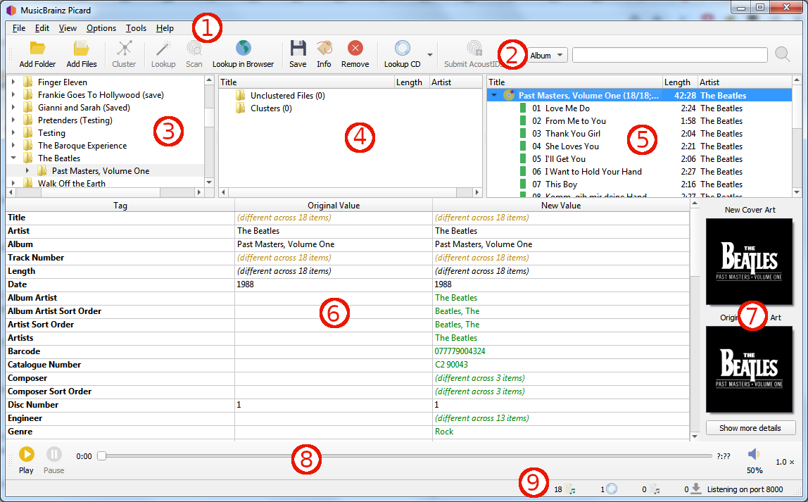

Écran principal¶
{kind=link}
Barre de menus: Ceci fournit le menu déroulant des actions que Picard peut effectuer.
Barre d’outils: Ceci fournit des liens rapides vers les principales fonctions exécutées par Picard. Ceci peut être personnalisé par l’utilisateur dans les paramètres User Interface Options.
Navigateur de fichiers: Ceci fournit un navigateur pour sélectionner les fichiers et répertoires à traiter.
Volet de cluster: Souvent appelé « volet de gauche », cette section permet à l’utilisateur de sélectionner et de regrouper les fichiers pour l’analyse, la recherche ou la mise en correspondance.
Volet Album: Souvent appelé « volet de droite », cette section affiche les albums extraits de MusicBrainz. C’est la section où les fichiers sont mis en correspondance avec les informations de piste téléchargées.
Volet Métadonnées: Cette section est un tableau à trois colonnes des métadonnées de balise pour l’album ou la piste actuellement sélectionné dans le volet Album. La première colonne affiche le nom de la balise, la seconde la valeur d’origine trouvée dans le fichier et la troisième colonne affiche la nouvelle valeur qui sera écrite.
Pochette: Ceci montre la nouvelle image de la pochette qui sera écrite dans l’album ou la piste sélectionné, ainsi que l’image de la pochette d’origine trouvée dans les fichiers correspondant à l’album ou à la piste sélectionné.
Lecteur de musique: Le lecteur intégré qui peut être utilisé pour lire des fichiers audio sélectionnés.
Barre d’état: La barre en bas de l’écran affiche des informations sur le fonctionnement actuel de Picard, y compris des éléments tels que le nombre de fichiers, d’albums et de téléchargements en attente.
Picard est disponible pour différents systèmes d’exploitation. Et bien que les fonctionnalités de Picard soient globalement les mêmes, l’aspect spécifique de l’interface utilisateur peut être légèrement différent en fonction du système d’exploitation. Tout au long de la documentation, des captures d’écran prises sur différents systèmes d’exploitation sont utilisées. Vous trouverez ci-dessous une sélection de captures d’écran de l’écran principal de Picard sur différents systèmes:
{kind=link}
{kind=link}
{kind=link}
{kind=link}
{kind=link}
{kind=link}
{kind=link}
{kind=link}